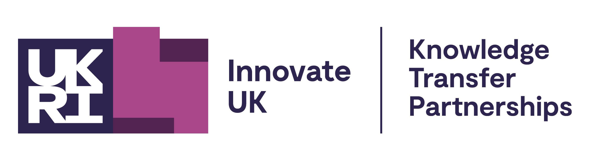
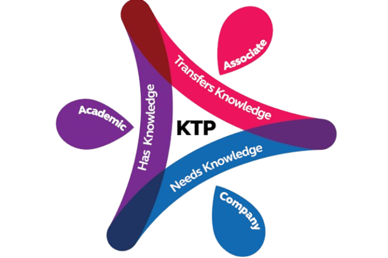
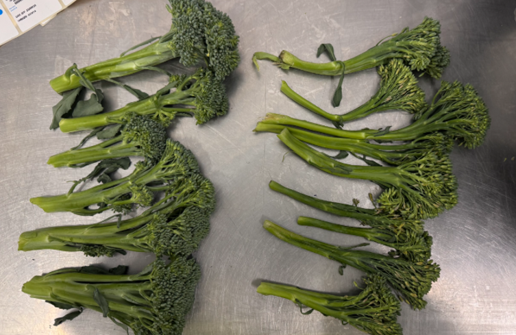

Career Skills in Business · Professional and Academic Development · Summer Provision
What Graduate Career
Opportunities Are There
in Innovation?
A KTP Associate's Journey in Strategy, Operations and Professional Development


The Graduate Labour Market · The Problem
Let's start with something that might make you confusing, frustrating and a little absurd.
of "entry-level" jobs require 3+ years of experience.
Job postings for junior roles have crept upward for years. And it keeps getting worse.
The Graduate Labour Market · Why Experience Is Asked For
Experience is evidence.
It's not about the work. It's about the hand-holding.
About Me · Tao Wu
From Graduate Roles
to Business Innovation
Trip.com Group Ltd
Management Trainee → Process Operations Supervisor
Cranfield University
MSc Logistics & Supply Chain Management
Port of Dover
Graduate Development Trainee
UoE × Wealmoor
Perishable Supply Chain KTP Associate
Knowledge Transfer Partnership · Innovate UK
What is KTP?
Programme
A unique programme helping organisations access the best UK academic knowledge, expertise and technology.
Partnership
A three-way partnership between a UK business, a UK Knowledge Base, and a suitably qualified graduate to lead a strategic project.
Funding
12–36 month Innovate UK funded project. Funding rates vary from 50%–67% depending on the company partner.

Knowledge Transfer Partnership · The Role
Being a
'KTP Associate'
Associates are based in the company, with access to university resources.
The academic team provide weekly supervision and attend monthly meetings to engage with company partners.
The Knowledge Transfer Advisor from Innovate UK stays engaged throughout the project as a coach and mentor.
KTP Associate · Why It's Worth It
Benefits of being a KTP Associate.
Employed & salaried
Associates earn a strong salary (typically £30,000–£50,000 per year), along with benefits like pension schemes depending on the host institution.
10% time for personal development
A substantial development budget each year for courses, conferences and qualifications — plus built-in time for your own learning, not squeezed in around the day job.
Lead a real project
Own a strategic project end-to-end. Genuine responsibility and visibility from the start.
Dual mentorship
Academic supervisors and company directors both invested in your growth and success.
Strong career outcomes
Most associates are offered a permanent role by the company — a proven route into industry.
Visa-friendly for international talent
Associates typically enter the UK via the Global Talent Visa (Endorsed Funder route), and can also use the standard Skilled Worker visa.
My KTP · Perishable Supply Chain
To develop and deploy novel approaches to
global food supply chain management.
Transition key perishable product supply chain from air to sea freight
Enhance resilience to freight volatility, reduce GHG emissions and improve shelf life
My KTP · 2024–2025 Results
Sea Freight Volume · Egypt Green Bean
Transport CO₂e Reduction
Qualifying Waste · Egypt Green Bean
Kenya Tenderstem Broccoli


My KTP · Project Review Areas

Employability · From Skill Names to Evidence
What employers actually look for.
Employers want…
Problem solving
Teamwork
Communication
Data & digital skills
Business awareness
Weak applications say…
"I am a problem solver."
"I work well in a team."
"I have strong communication skills."
"I am analytical."
"I understand business."
Strong applications prove… (action → result)
Built a container-loading tool & ran trials → waste 19% → 9.7%
Coordinated growers, shipping lines & retail → sea freight 9% → 69%
Pitched trial results to executives → won sign-off to scale
Built Power BI dashboards on the ERP → used daily by the floor team
Tied changes to cost, quality & risk → 48% CO₂e saving / tonne
The best career evidence is not a skill name — it is a story of action, context and impact.
The Value of Work Experience · How to Apply
Experience is the evidence — here's how to apply it.
It gives you four things: proof on your CV · a network · clarity on what you want · classroom knowledge made real.
Start early — know the calendar
Spring weeks, insight days & grad schemes open Oct–Dec, a year ahead.
Treat every experience as evidence
Even a two-month internship belongs on your CV. Quantify it: "Managed 3 social accounts" beats "assisted with social media." Say what you did, used & delivered.
Build one in-demand skill first
Pick one in-demand skill — Python, Power BI, Figma, Excel dashboards, and more. Finish a free/low-cost course, add the certificate. It signals initiative and bridges the gap.
Tailor every application — stop mass-applying
Read the job description; mirror its language. Lead with impact, not duties. Ten targeted applications beat a hundred generic ones.
Use AI to break knowledge barriers
You no longer need a background to enter a field. AI turns "I'm not qualified" into "I can learn this" — closing knowledge gaps fast and opening doors that used to be closed.
Use your support network
The Essex Careers Service reviews CVs & runs mock interviews. Watch KTP openings at iuk-ktp.org.uk for paid, project-led graduate roles.
Reflection · Before You Leave Today
Three questions to sit with.
-
1
What have you already done that you haven't turned into evidence?
Every job, society, module or project holds an action → result story. Experience isn't the gap — telling it is. What's the one you've never put into words?
-
2
What's one move you'll make this term — not next year?
One application, one skill to start, one chat with the Careers Service. Deadlines open earlier than you think. Small action now beats a perfect plan later.
-
3
What problem do you actually want to solve — and what could you learn to get there?
You don't need the background yet. Pick the problem you care about; with AI, the knowledge gap is now closeable.
Thank You · Q&A
The barrier was never experience.
So go and pursue
what genuinely excites you.
Package what you have, close the gaps with curiosity, and back yourself to chase what you actually care about. The experience will follow.
Connect on LinkedIn